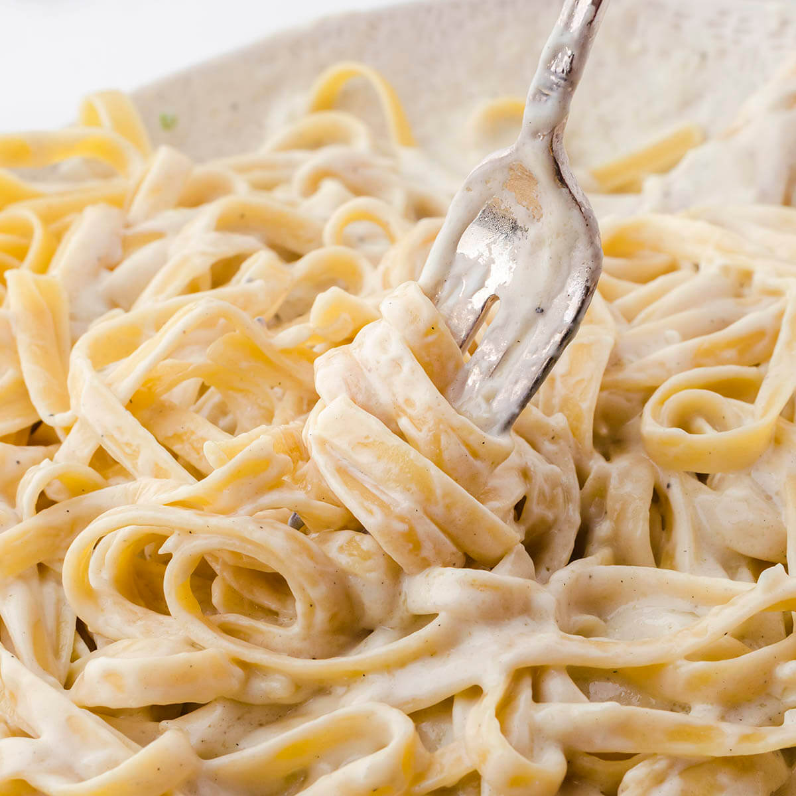

Fettuccine Alfredo

Description
Fettuccine alfredo is a Italian dish of fresh fettuccine tossed with butter and Parmesan cheese. In the United States, it is commonly served as an entree, popularized by Italian-American restaurant chains like Olive Garden!
Ingredients
- 1 lb of Fettuccine pasta
- 6 tablespoons of butter
- 1 garlic clove
- 1 1/2 cups of heavy cream
- 1/4 tsp salt
- 1 1/4 cups of shreeded Parmesan cheese
- 1/4 teaspoon pepper
- 2 tbsp of Italian parsley (optional)
Steps
- In a large pot, heat water over high heat until boiling. Add salt to season the water. Once it is boiling, add fettuccine and cook according to package instructions.
- In a large skillet or pan, heat butter over medium heat. Add minced garlic and cook for 1 to 2 minutes. Stir in heavy cream.
- Let heavy cream reduce and cook for 5 to 8 minutes. Add half of the parmesan cheese to the mixture and whisk well until smooth. Keep over heat and whisk well until cheese is melted.
- Save some pasta water. The pasta water is full of flavor and can be used to thin out the sauce.
- Toss alfredo sauce with fettuccine pasta and add half of the parmesan cheese. Once it is tossed, garnish with the remaining parmesan cheese. Add a little pasta water if it needs to be thinned out
- Garish with Italian parsley, if so desired.